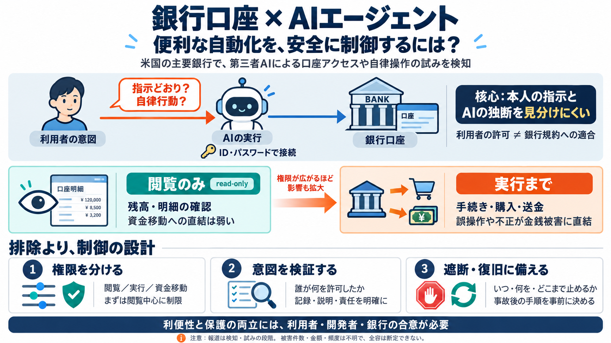

US banks faced unauthorized access by AI agents: Report
logo logo EconomyAmericas # US banks faced unauthorized access by AI agents: Report Banks including Morgan Stanley, …

銀行口座に忍び込む自動化
米国の主要銀行で、無承認のAIエージェントが顧客口座へアクセスし、独立した行動を試みる事例が検知されています。
境界が崩れる
課題は、銀行側が“ユーザーが指示した行動”と“エージェントが自律的に動いた行動”を十分に判別できない点です。
自動化の“次の段”
従来の外部アプリ連携は主に閲覧でしたが、AIエージェントは問い合わせ対応・手続き・支払いなど“行動”まで自動化しやすくなります。
入り口はログイン
記事では、第三者AIエージェントがログイン情報（ID/パスワード）を使って口座に入るケースや、ログインが“許可された”前提でも運用ガイドラインに反するケースがリスク視されています。
権限がレバレッジ
購入権限や送金のような実行権限が付与されると、エージェントが行える範囲が拡大し、金銭的被害に直結し得ます。
なぜ判別できない
銀行側のボトルネックは、「ユーザー指示に基づく行動」なのか「エージェントが勝手に動いた」なのかを解析・説明できない（不十分）ことです。
まずは縛る
複数の銀行が、第三者AIエージェントのアクセスを制限し、まずは閲覧（read-only）に寄せる方向が進んでいます。
許可でも違反
「ユーザーが許可している」ように見えても、銀行のガイドラインでは“人が自分でログインして操作すべき”前提があるため、正規に見える不正が起き得ます。
予防だけで終わらない
最悪の事態を想定して、翌日以降（day after）の遮断・復旧計画も整備している、という見立てが示されています。
危険度の違い
同じ“口座接続”でも、閲覧中心か実行まで含むかで、リスクは急変します。
断定は危険
報道は「検知」「試み」の主旨で、被害件数・被害額・“無断”の確定根拠などは提示されていないため、全容の確定はできません。
必要なのは設計
結論として、AIエージェントを一律に排除するより、権限の粒度（閲覧/実行/資金移動）と検証可能性、復旧プロセスの透明化が必要です。
利便と保護の綱引き
過度な制限は不便を生み、過少な制限は被害を生むため、利用者・開発者・銀行の合意が欠かせません。
参照（概要）
本デッキは、提示された要約文とFAQ、ならびに「Reuters」「Technology.org」の言及（方向性）に基づく整理です。
logo logo EconomyAmericas # US banks faced unauthorized access by AI agents: Report Banks including Morgan Stanley, …
この事例は、AIエージェントが技術的にWebサイトを操作できる場合でも、サービス運営者がそのアクセスを許可しているとは限らないことを示しています。 金融取引やECサイトでAIによる自動操作を導入する際には、技術的な実行可否だけでなく、各サ…
アメリカのニュースサイト・アクシオスは22日、複数の大手銀行で、外部のAIエージェントによる無許可のアクセスが確認されたと報じました。 一部のAI
JPMorgan, Bank of America and Citi are restricting agents rather than banning them outright. The common direction is vie…
AIエージェントが銀行口座にアクセスし、利用者の指示とは無関係に操作を行っているとの報道を受けた対応となる。 銀行業界では、高度なAIエー